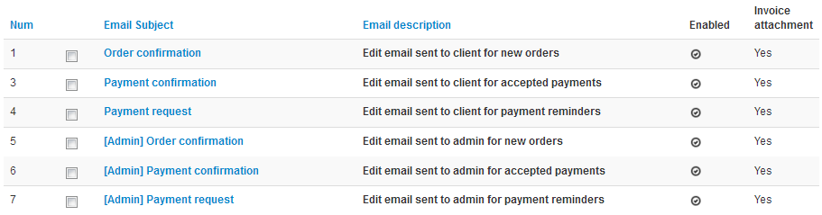

Here you can modify the content of the emails initially set as the list shown below.
You can notice than half of these emails are preceded by "Admin" which means these are the emails that will be sent to admin if you decided to enable them (you can check it on the list above). Here all my mails are enabled, so they all will be sent. We decided not to letting you create new email because they are related to the state of the invoice and triggered when it changes. You cannot send mail when the order is cancelled, but you can modify the content and the render, following the next step.
You can see list of tags representing a precise data from invoice or order, you can see a list with definition here : I want to change how the emails are displayed ).
You can't change the description cause it's meant to help you to remember why this email is for because you can change the title. Of course, you can change the content and use tags in it but remember this is a template for mail so you have to be aware that some templates are not compatible with all email managers like Outlook and that issues could be noticed if you use your own template and that it does not display correctly, we advice you to keep the default template somewhere to use it if yours doesn't display properly.
Finally, you can choose whether you want a PDF version or the command or the invoice send as a PDF attachment. You can see on the list of emails if you chose "Yes" or "No" for each email.